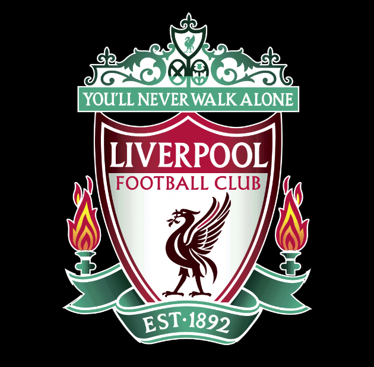

Impact
Affect On Homeland
|
Mohamed Salah, a soccer player from Nagrig, actively supports his hometown, where 65% of residents live in poverty. He donates money towards constructing a school, hospital, Al-Azhar institute, and ambulance unit. Additionally, in a personal incident, Salah's family was robbed in Egypt, leading to the thief's arrest. Instead of pressing charges, Salah financially aided the thief and attempted to find him employment, showing how kind Salah is. He also donated a replica shirt to a young fan of his and assisted over 450 families with monthly allowances. |

|
CharitySalah also, during an economic crisis in Egypt, contributed around $300,000 to the government. Lastly, when a church named after the saint "Abu Sefein" was burned, taking 41 lives, Salah felt the pain of these people and showed his condolences on Twitter (now X). It is crucial to note that even though he is Muslim and this is a Christian church, he paid 3 million Egyptian pounds, once again proving his kindness and willingness to share his success with others in need. |
Impact On Liverpool
|
It is important to note the impact Salah has made in Liverpool, and how. His leadership skills play a big role both off and on the field. In the locker rooms, or with the team coach Jurgen Klopp, he is positive, smart, and focused on the way to reach success rather than the success itself. He is top 5 in the number of goals for the Liverpool team and proceeds every day to prove why he is the team captain. Along with Virgil Van Dijk, Trent Alexander-Arnold, and Andrew Robertson, they all took the leadership role as a job to enjoy and feel the responsibility instead of a burden. It is safe to say, with his positive mindset and smart mind, that he has a big impact on Liverpool FC. To continue learning about Salah's career and the more teams he's been on, click on the career timeline tab. |
 |